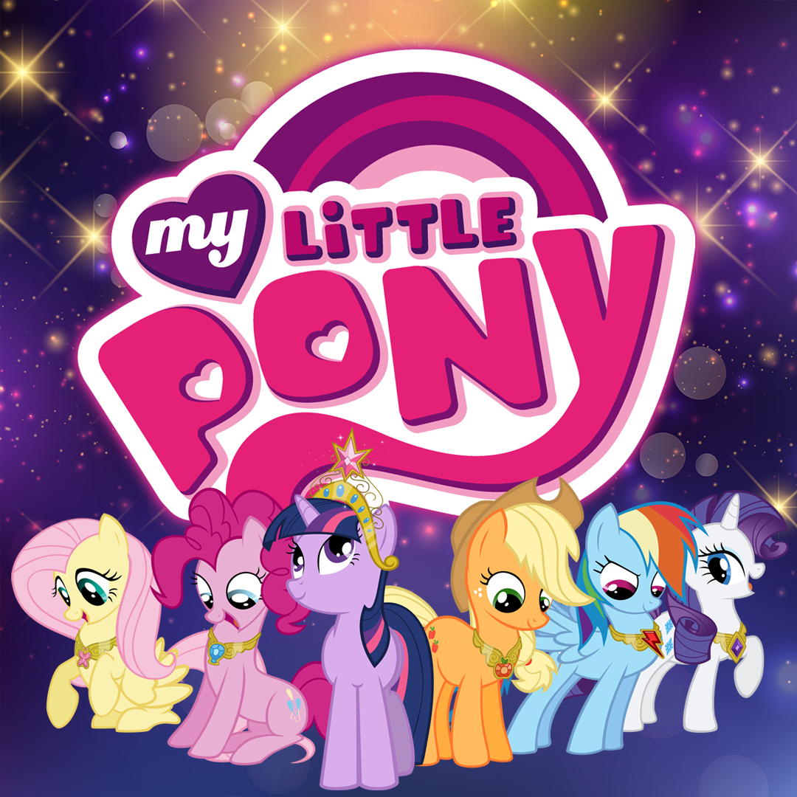
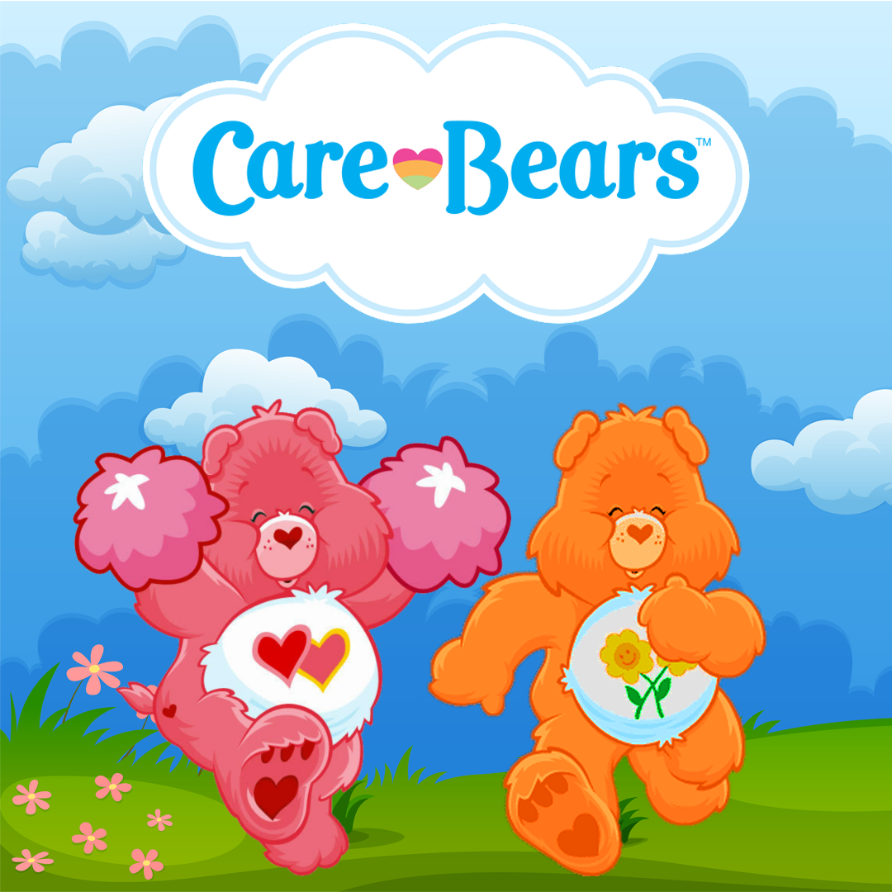

The Magic of Friendship
November 13, 2023 by Olufunkẹ Ogunde

My Little Pony is all about friendship and the power of it. It highlights the highs and lows of
friendship, but most importantly shows how a strong bond is built and maintained. The series
shows that friendship isn’t just about having fun, but about learning patience, kindness, honesty,
and forgiveness. Each character contributes something different, proving that diversity makes
friendships stronger. The ponies remind us that even though we may face struggles alone, we never ever
have to be alone. In this sense, friendship is a kind of everyday magic — one that can heal and inspire.
It’s a reminder that some of life’s greatest treasures can’t be bought, only shared.
Though the show is primarily meant for young girls, I think it can still teach people of all ages
valuable lessons. The series' lessons reflect life's daily challenges and how to work through them. True
connections require effort, but the rewards — trust, loyalty, and joy — are worth it. Friendship, in its purest
form, is the magic that holds communities, families, and hearts together. Like the ponies themselves show, it’s
when we lean on each other that we truly shine!
Welcome to Care-a-Lot
November 27, 2024 by Olufunkẹ Ogunde

Care-a-Lot, the home of Care Bears, is a world of colours and meanings. Each Care Bear
is unique because they stand for a different feeling—Cheer Bear radiates joy, Grumpy Bear
reminds us it’s okay to feel down sometimes, Love-a-Lot Bear shows the power of compassion,
and Good Luck Bear reminds us to stay optimistic when things don’t go our way. By showing
such a wide range of emotions, the Care Bears teach us that every feeling has value. No
emotion is “bad”. They all help us understand ourselves better and connect more honestly
with others.
Just like My Little Pony, the target audience for Care Bears is the younger, more impressionable
generation. However, the lessons taught are always applicable. Managing emotions doesn’t mean
hiding them, but rather learning how to express them in healthy ways. Cheer Bear inspires us to
spread happiness, while Grumpy Bear reminds us that frustration and sadness are natural too.
Love-a-Lot Bear encourages us to show kindness and empathy, even when it’s difficult, and Good
Luck Bear teaches us to keep hope alive in challenging times. What matters is finding
balance—celebrating the good moments without ignoring the harder ones.